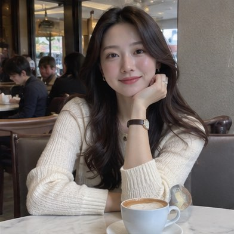
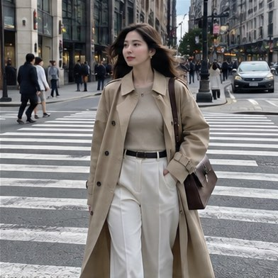
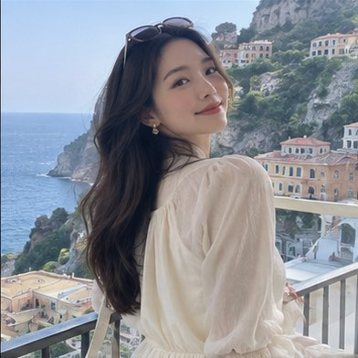
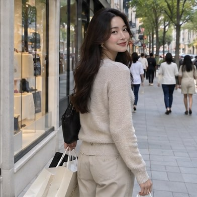
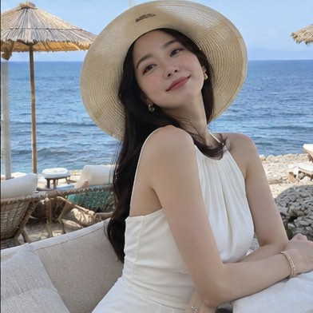

01
내 취향을 알려줘요.
좋아하는 사진을 직접 더하면,
내 취향에 맞는 후보를 모아요.





YOUR FEED. YOUR PICK.
비슷한 사진 수십 장, 고민은 여기까지.
후보는 Goreun이, 마지막 한 장은 내가 골라요.
고르게, 고르고, 고른.


표정부터 분위기까지,
나란히 비교해요.
사진·확대 비교 예시
사진은 많이 찍었는데,
올릴 한 장은 고르기 어려우니까.
확대하고, 넘기고, 다시 보기.
그 고민을 조금 더 가볍게.
YOUR PHOTOS. YOUR WAY.
좋아하는 분위기를 참고하고,
이번 게시물에 담고 싶은 느낌을 더해요.
좋아하는 사진을 직접 더하면,
내 취향에 맞는 후보를 모아요.





특별히 담고 싶은 분위기나
꼭 남기고 싶은 포인트를 적어주세요.
배경도 잘 보이면서,
자연스럽게 나온 사진을 골라줘.
후보와 선택 이유를 나란히 비교하고,
올릴 사진을 직접 골라요.
THE FINAL CHOICE IS YOURS.
사진마다 확대하고, 앞뒤로 오갈 필요 없이.
전체 구도와 작은 표정을 함께 살펴보세요.
전체 구도표정구도분위기카페 배경과 자연스러운 표정이 함께 담겨 있어요.
이 사진을 골랐어요. 이제 내 사진으로 올릴 후보를 골라보세요.
올릴 사진을 골랐다면, 정리도 자연스럽게.
고르지 않은 사진은 따로 모아 보여줘요. 원본은 그대로 남아요.
PRICING